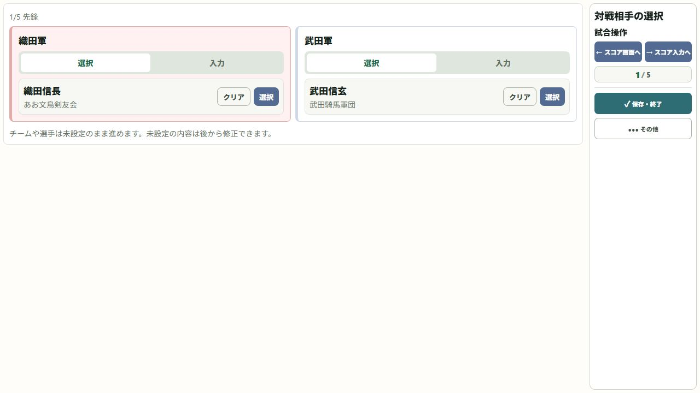

06 / 記録する
団体戦のチームと順番を決める
人数、方式、選手の順番を、実際のオーダーに合わせます。
操作の入口新しい試合 → 団体戦 → チームと選手
人数と方式を確認する
団体戦を選び、人数と勝者数法・勝抜き法などの方式を設定します。
両チームを選ぶ
自分側と相手側のチーム名・所属を確認します。同じ所属のA・Bチームはチーム名で区別します。
オーダー順に選手を配置する
先鋒から大将まで、各対戦の赤・白が正しいかを確認します。選手の入れ違いに注意します。
各対戦を記録する
対戦を進め、団体結果の勝者数・取得本数を確認します。保存前にチーム全体の結果も見直します。

